Learning outcomes
By the end of Chapter 5 you should be able to do each of these. The tag shows where it is covered.
- 5.1Describe how water is an integral part of all sedimentary rock formation.
- 5.2Explain how chemical and mechanical weathering turn bedrock into sediment.
- 5.3Differentiate clastic rock, made of pieces of weathered bedrock, from chemical rock, which precipitates out of solution by organic or inorganic means.
- 5.4Explain the importance of sedimentary structures and depositional environments, and how they give insight into Earth's history.
How to use this guide
Underlined words are key terms. Click one, or open Key terms at the bottom right, to read and search every definition from this chapter. Most of Earth's surface is sedimentary rock or the sediment it comes from, and almost all of it has one thing in common: water.

5.1The unique properties of water
Water helps form most sedimentary rock. It is a main agent in making the minerals of chemical sedimentary rock, and it weathers and erodes bedrock into the grains that become detrital (clastic) rock.
A water molecule is two hydrogen atoms covalently bonded to one oxygen atom, about 105° apart and both on one side of the oxygen (Figure 5.2). The hydrogen side is slightly positive and the oxygen side slightly negative. This property, , works like the two ends of a battery or magnet and causes the properties below.
- Sticks to other things and to itself. Water clings to other substances () and to itself (). Cohesion makes droplets and creates , which lets some insects walk on water.
- Liquid is denser than solid. Polarity creates weak that let liquid water molecules sit close together. Water is densest at 4 °C. Freezing forces the molecules apart into a crystal lattice, so water expands and ice floats. Because 4 °C water sinks, oceans do not freeze solid from the bottom up, which keeps Earth habitable.
- Liquid over a wide range. Hydrogen bonding lets liquid water absorb a lot of energy before boiling, so it stays liquid from 0 °C to 100 °C (32–212 °F) and is found from pole to pole. Water is the only substance found as solid, liquid, and gas in Earth's surface environments.
- Universal solvent. Water dissolves more substances than any other common natural liquid. Its molecules use polarity and hydrogen bonds to pry ions out of crystal lattices; given enough time, it can dissolve even the strongest rocks.
Check yourself: Section 5.1 quiz in the textbook ↗
5.2Weathering and erosion
is the solid rock of Earth's outer crust. turns bedrock into smaller particles called . It works in two ways, summarized in Table 5.1. then moves the sediment (and soil) away from where it weathered.
| Kind | What it does | Processes |
|---|---|---|
| Mechanical | Physically breaks rock into smaller pieces | Pressure expansion, frost wedging, root wedging, salt expansion |
| Chemical | Changes minerals into new substances and dissolved ions | Carbonic acid and hydrolysis, dissolution, oxidation |
5.2.1 Mechanical weathering
physically breaks bedrock into smaller pieces. Its usual agents are pressure, temperature, freeze–thaw cycles, plants and animals, and salt.
- Pressure expansion. Bedrock buried deep is under high pressure and temperature. When uplift and erosion bring it to the surface, its temperature falls slowly but its pressure drops at once, so the rock expands and cracks: . When the surface spalls off in layers it is called sheeting or . is a type of exfoliation that makes rounded shapes, caused when chemical weathering moves along joints in the bedrock.
- Frost wedging. In (ice wedging), water seeps into cracks and expands as it freezes, prying the crack wider (Figure 5.3). The melted water moves deeper into the widened space, and repeated cycles, sometimes daily, break the rock apart.
- Root wedging. In , plant roots grow into cracks and pry the rock apart. Roots preserved in the rock record are called . Burrowing earthworms, termites, and ants weather rock in a similar way.
- Salt expansion. Where evaporation is high or near the sea, salts precipitate out of solution and grow into cracks. This is one cause of , a series of holes in a rock that become weak points for more weathering. Evaporating salt water can also leave a square imprint in soft sediment, called a .

 Exfoliationgranite shedding its outer layer
Exfoliationgranite shedding its outer layer Root wedgingroots cracking asphalt
Root wedgingroots cracking asphalt TafoniSalt Point, California
TafoniSalt Point, California
5.2.2 Chemical weathering
dominates in warm, humid environments. Water, oxygen, and other reactants break down the minerals of bedrock into water-soluble ions that water can carry away. Higher temperatures speed it up.
The two kinds of weathering work together through the . Chemical weathering acts only on surfaces, because water and reactants cannot get inside solid rock. Mechanical weathering breaks rock into smaller pieces and creates new surfaces, so more area is exposed. Higher surface-area-to-volume ratios give faster overall weathering (Figure 5.5).
Carbonic acid and hydrolysis
(H2CO3) forms when carbon dioxide dissolves in water. This happens naturally in clouds, which is why rain is normally slightly acidic. Carbonic acid drives two weathering reactions: hydrolysis and dissolution.
happens in two ways. Water molecules can ionize into H+ and OH− ions that replace cations in a mineral's crystal lattice, or carbonic acid can react directly with minerals rich in silicon and aluminum, such as feldspars, to form (Figure 5.6). Hydrolysis is the main process that breaks down silicate rock and makes clay.
Clay minerals are platy silicates (phyllosilicates, Unit 3) similar to micas and are the main part of very fine-grained sediment. The dissolved products may later precipitate as chemical sedimentary rocks such as evaporites, limestone, amorphous silica, or chert nodules.
Dissolution
is a hydrolysis reaction that dissolves minerals and leaves their ions in solution, usually water. Evaporites and carbonates such as salt and calcite dissolve most easily, but all minerals can dissolve. Neutral water (pH 7) dissolves any mineral, though slowly; more acidic water, natural or man-made, works faster. Liquid water is normally slightly acidic from carbonic acid and free H+ ions. Organisms such as lichen and bacteria speed dissolution by releasing organic acids onto rock, and humid, rainy regions dissolve more rock because water and rock stay in contact longer.
The ties weathering rates to Bowen's Reaction Series (Unit 4): minerals that crystallize first, at high temperature, weather fastest (Figure 5.7). Mafic olivine and pyroxene (about 1,250 °C) weather quickly and completely and are rarely found as weathering products, because they break down into ions. Felsic quartz (about 700 °C) is very resistant.
In places with abundant carbonate bedrock, dissolution produces , with sinkholes and caves (see Chapter 10). Timpanogos Cave in northern Utah formed by dissolution followed by precipitation: groundwater saturated with calcite seeped into the cavern, and evaporation made the minerals precipitate as cave formations.
 KarstMinerve, France
KarstMinerve, France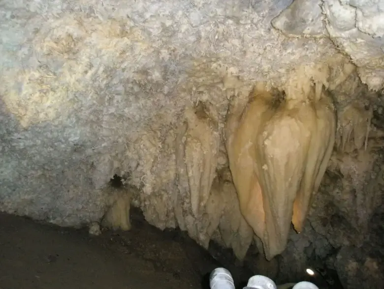
Dissolution, then precipitationGreat Heart of Timpanogos, Utah
Oxidation
, the reaction that rusts metallic iron, happens in rock when iron atoms in a mineral bond with oxygen; any iron-bearing mineral can oxidize. Three common minerals result: red or grey hematite, brown goethite ("GUR-tite"), and yellow limonite. These iron oxides can coat and bind grains together () and often give rocks their colour, as in the Colorado Plateau, Zion, Arches, and the Grand Canyon. Oxides that resist weathering can form iron concretions; weaker oxides leave void spaces inside the rock and hollows on its surface.
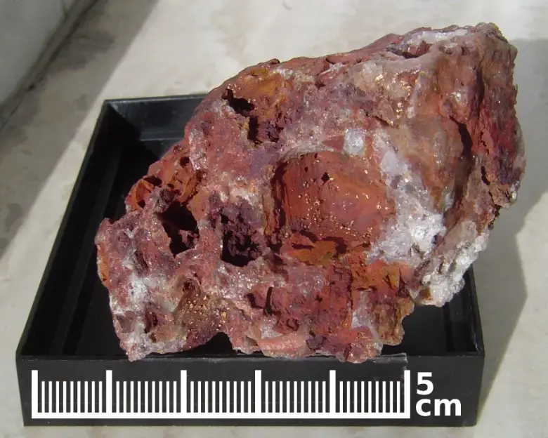
Dissolutiona cube-shaped hole left by pyrite, with specks of gold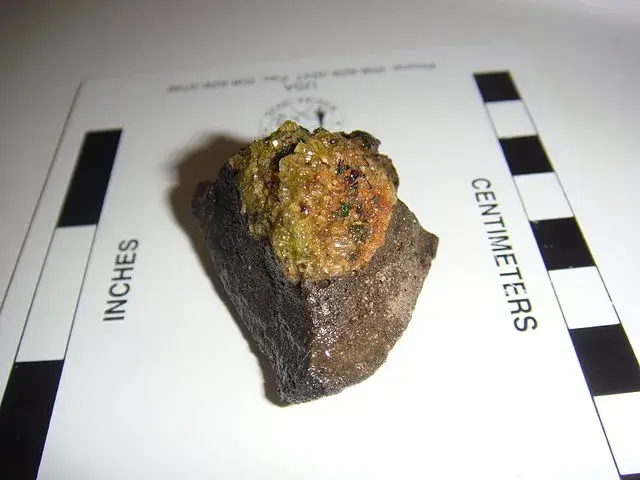
Hydrolysis + oxidationolivine altering to iddingsite Oxidationpyrite cubes turned to goethite
Oxidationpyrite cubes turned to goethite
5.2.3 Erosion
Erosion is a mechanical process that removes sediment from where it weathered. It is usually driven by water, wind, ice (glaciers, Chapter 14), or gravity (mass wasting, Chapter 10); liquid water is the main agent. shapes distinctive landforms. The cliffs of the Grand Canyon are rock left standing after less resistant material weathered and eroded away, and rocks of differing resistance make the of Bryce Canyon National Park and Goblin Valley State Park in Utah.
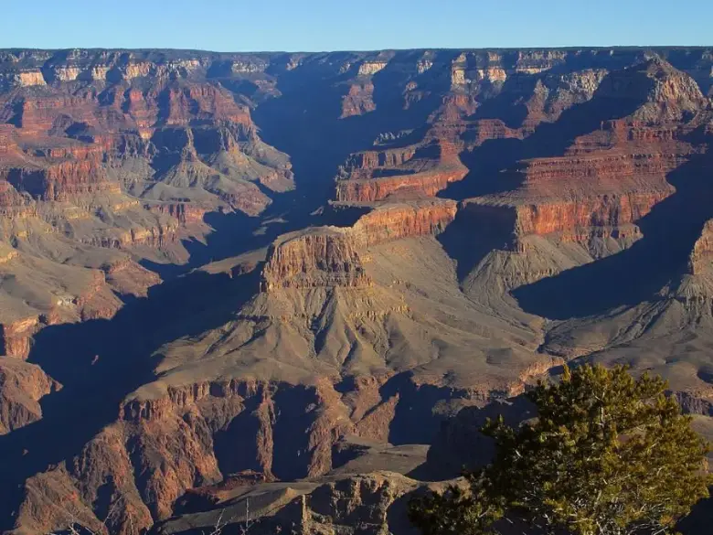
5.2.4 Soil
is a mix of air, water, minerals, and organic matter that forms where the biosphere meets the geosphere. Weathering turns bedrock into sediment; if erosion does not remove it, organisms use its minerals, water, and atmospheric gases to build organic substances that become part of the soil.
The organic part of soil, , is a rich source of usable nitrogen. Nitrogen is the most common element in the atmosphere, but in a form most life cannot use. in soil take it from the air and make nitrogen compounds; plants absorb these to build DNA, amino acids, and enzymes, and animals get their nitrogen by eating plants (Figure 5.11). Soil productivity depends on water and nutrient content: fresh volcanic soils () and clay-rich soils that hold nutrients and water are productive.

Five factors mainly control a soil's nature: (1) the mineralogy of the , (2) topography, (3) weathering, (4) climate, and (5) the organisms living in it. For example, soil erodes faster on steep slopes, so it is thinner there than on flood plains, where it accumulates.
Well-formed soils show distinct layers called , often visible in road cuts; together they make the (Figure 5.12). Naming schemes vary by area, soil type, and research topic.
- O horizon: a thin layer of mostly organic material, such as leaves and twigs, actively decaying into humus.
- A horizon: , humus mixed with mineral sediment. Water soaking down leaches out soluble chemicals; in wet climates this forms a separate E horizon, the leaching or zone.
- B horizon: , sediment mixed with humus washed down from above; mineral sediment is chemically weathered here. Organic matter and weathering decrease with depth.
- C horizon: , a zone of mechanical weathering where bedrock fragments are broken but not chemically altered. No organic material.
- R horizon: unweathered parent bedrock and fragments.
The chapter also splits the B horizon into an upper zone it calls (porous humus and highly weathered sediment) and a lower zone it calls (little organic matter mixed with mostly unaltered parent rock). Most references use these words more broadly; see Fact-check notes.
The USDA classifies soils into . Oxisols ( soils) are nutrient-poor tropical soils, poor for crops but home to most of the world's mineable aluminum ore, . Aridisols form in dry climates and can develop hardened calcite layers called . Andisols come from volcanic ash, and alfisols contain silicate clay minerals; both are productive for farming. Colour is a useful clue in soils and in many sedimentary rocks: black tends to mean anoxic, red oxygen-rich, and green oxygen-poor (reduced).
Case study: the Dust Bowl
In the 1930s, settlers encouraged by the government plowed prairie in southern Kansas, Colorado, western Texas, and Oklahoma into long, straight rows running downhill. Plowing broke up the stable soil profile and destroyed the deep-rooted native grasses that anchored it; the replacement grain crops had shallow roots and were plowed up every year. The dry climate could not support the grain, farmers over-pumped aquifers, the crops failed, and prairie winds stripped the bare topsoil. Huge dust storms ("black blizzards") carried soil to the east coast and as far as Europe, and the homesteaders left in droves. This is the setting of Steinbeck's The Grapes of Wrath.
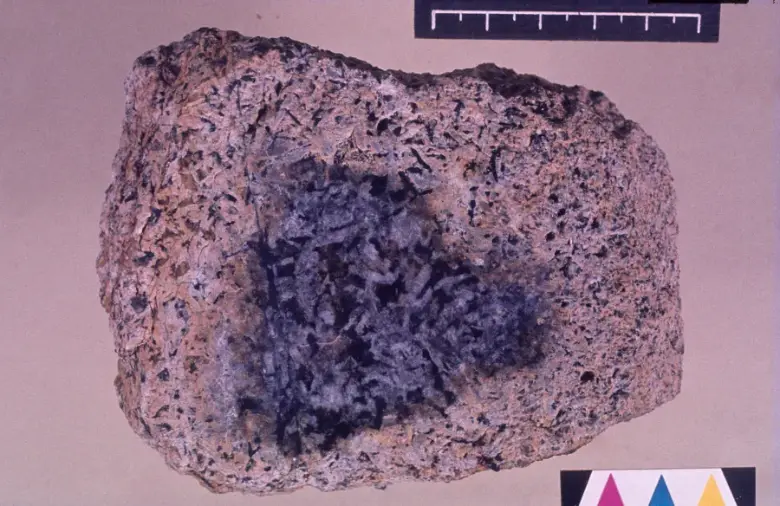
Bauxitewith an unweathered igneous core Dust stormStratford, Texas, 1935
Dust stormStratford, Texas, 1935 TerracingInca terraces reduce erosion
TerracingInca terraces reduce erosion
Check yourself: Section 5.2 quiz in the textbook ↗
5.3Sedimentary rocks
Sedimentary rock has two main categories. or rocks are made of pieces of bedrock, mostly from mechanical weathering (some chemically weathered sediment may be included); they are classified by grain size, grain shape, and sorting. precipitate from water saturated with dissolved minerals and are classified mainly by mineral composition.
5.3.1 Lithification and diagenesis
turns loose sediment into clastic rock in three linked steps (Figure 5.14):
- : friction and gravity overcome the forces moving the sediment, so it settles and accumulates.
- : more material piles on top, squeezing the grains together and driving out water. Weak attractive forces between small grains help.
- Cementation: groundwater carries cementing minerals such as calcite, amorphous silica, or oxides into the sediment. They coat the grains and glue them into solid rock, and may differ in composition from the grains.
accompanies lithification. It is a low-temperature form of rock metamorphism (Chapter 6) in which heat and pressure chemically alter sediment. For example, aragonite (CaCO3), which makes up most shells, reverts to calcite (same formula, different crystal structure); with magnesium present, calcite may become dolomite (CaMg(CO3)2). Diagenesis can also reduce , the open volume between grains. Cementation, compaction, and lithification all happen within the realm of diagenesis, which also turns organic material into fossils.
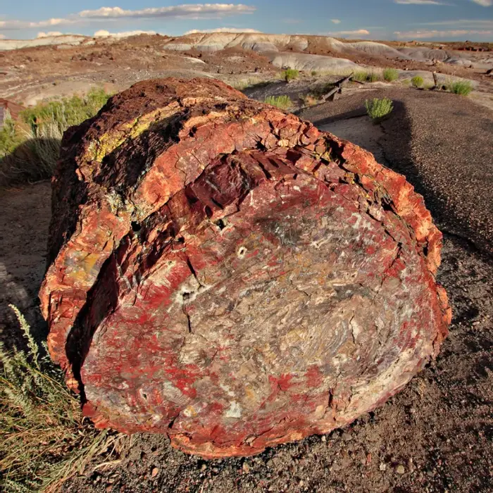
5.3.2 Detrital (clastic) sedimentary rocks
Detrital rocks are made of pieces of pre-existing, weathered bedrock. Most of it is mechanically weathered, but some clasts may be pieces of chemical rock, so the two categories overlap. Detrital rocks are named by grain size.
Grain size
is the average diameter of the fragments in a sediment or rock. The grades it from large to small on a base-2 (log2) scale, so each class boundary is half the one above (Table 5.2). Fragments larger than 2 mm are called , collectively gravel. Sand (2 to 0.0625 mm) is about the smallest size the naked eye can see. Silt can be felt as grit between your teeth but is too small to see; clay is finer still.
| Class | Diameter (mm) | Clastic rock |
|---|---|---|
| Boulder | > 256 | Conglomerate (rounded clasts) or breccia (angular clasts) |
| Cobble | 64–256 | |
| Pebble | 4–64 | |
| Granule | 2–4 | |
| Sand | 1/16–2 (0.0625–2) | Sandstone |
| Silt | 1/256–1/16 (0.004–0.0625) | Siltstone |
| Clay | < 1/256 (< 0.004) | Claystone |
Silt and clay together are mud; their rocks are mudstone and, if they split into thin sheets, shale. Class boundaries from the USGS version of the scale (see Fact-check notes).
Sorting and rounding
describes the range of grain sizes: well sorted means a narrow range and poorly sorted a wide range (Figure 5.16). Soil engineers use similar words with opposite meanings: "well graded" has many sizes and "poorly graded" has roughly one size.

Sorting reveals transport and deposition energy. Wind-blown sands are extremely well sorted, while glacial deposits are poorly sorted. Coarse, poorly sorted sediment usually lies near its source, and fine sediment is carried farther: a fast mountain stream holds boulders and pebbles, the lake it feeds holds sand and silt. Large boulders in that lake would point to another process, such as rockfall caused by ice or root wedging.
is the loss of sharp corners by abrasion during transport (Figure 5.17). Well-rounded grains have no sharp edges; very angular grains keep their corners. More rounding implies longer transport time or distance, or a more energetic process; mineral hardness also matters. , how close a grain is to a sphere, is a separate measurement.
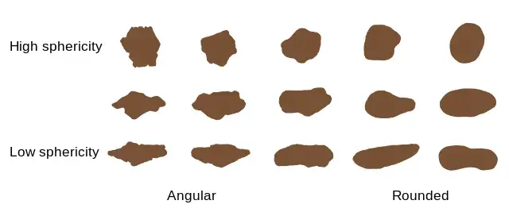
Composition and provenance
is the minerals in a sediment or rock, influenced by local geology such as source rock and hydrology. Quartz is the most common sediment mineral: it is chemically unreactive, hard, and everywhere in continental bedrock. Feldspar and (pieces of fine-grained bedrock such as mud chips, volcanic clasts, or slate) are also common. Hawaii's black (basalt) and green (olivine) sand beaches are rare because the local rock is almost entirely basalt; by the Goldich series such mafic clasts are destroyed more easily than felsic ones.
is the original source of a sediment, worked out from its minerals, fossils, and textures such as sorting and rounding. It helps describe tectonic history, paleogeography, and past supercontinents. In quartz sandstone (quartz arenite), the rare, durable mineral (ZrSiO4) contains traces of uranium that can date the source bedrock (Chapter 7).
 Volcanic lithic fragmenta basalt sand grain under the microscope (box 0.25 mm)
Volcanic lithic fragmenta basalt sand grain under the microscope (box 0.25 mm) Green sand beacholivine sand, Hawaii
Green sand beacholivine sand, Hawaii
Classifying clastic rocks
- Coarse-grained: clasts mostly larger than sand, held together by smaller grains called (groundmass). has rounded clasts and angular clasts; both are usually poorly sorted.
- Medium-grained: mostly sand. , or if well sorted. Quartz sandstone is mostly quartz. has a lot of feldspar, usually more than 25%; because feldspar weathers faster than quartz, it helps reveal local geologic history. has conflicting definitions: sandstone with a muddy matrix, or with many lithic fragments.
- Fine-grained: is the general term for rock of grains smaller than sand. Rock that splits into thin sheets () is . Rock made only of silt is and only of clay is ; these are rarer than mudstone or shale.
Mixtures are named with the lesser component as a descriptor: mostly rounded sand and gravel with some silt is a silty conglomerate; sand with a little clay is a clayey sandstone.
 MegabrecciaTitus Canyon, Death Valley
MegabrecciaTitus Canyon, Death Valley Sandfrosted, rounded wind-blown grains
Sandfrosted, rounded wind-blown grains ShaleRochester Shale, New York, with thin fissile layers
ShaleRochester Shale, New York, with thin fissile layers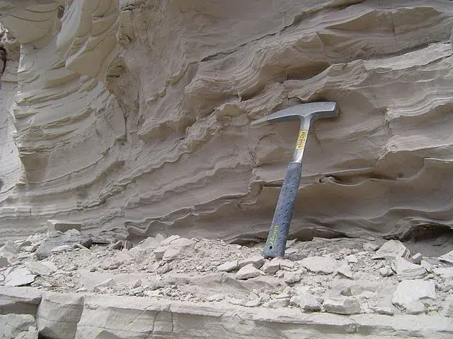
Claystonelaminations from Glacial Lake Missoula
5.3.3 Chemical, biochemical, and organic rocks
Chemical sedimentary rocks form without direct mechanical weathering and erosion, though chemical weathering may supply the dissolved materials. There are three groups:
- Inorganic chemical: minerals precipitated from dissolved ions without living organisms, where ion concentration, dissolved gases, temperature, or pressure change.
- : shells and bodies of underwater organisms, which extract aragonite (often later replaced by calcite) or silica from water.
- : plant and animal remains deposited (usually underwater), buried, heated, and lithified into coal, oil, and natural gas (methane).
Biochemical and organic sediments are technically clastic, since they are pieces of organic material, but are usually classified as chemical.
Inorganic chemical rocks
Most form when evaporation makes minerals precipitate from water as salts called . The Bonneville Salt Flats in Utah flood with winter rain and dry every summer, leaving gypsum and halite. Minerals precipitate in the reverse order of their solubility: as water evaporates, the least soluble come out first (Figure 5.20, Table 5.3). Natural values vary from these laboratory ones.
| Mineral (in order) | Seawater remaining after evaporation |
|---|---|
| Calcite | 50% |
| Gypsum / anhydrite | 20% |
| Halite | 10% |
| Potassium and magnesium salts | 5% |
- : porous calcite precipitated from water saturated in calcium carbonate, near degassing water and in saline lakes. At waterfalls below springs, turbulence releases CO2, which makes calcite less soluble. Mono Lake's tufa towers were exposed when water diversion lowered the lake.
- : banded calcite that forms cave deposits (stalactites, stalagmites) and hot-spring terraces such as Mammoth Hot Springs, Yellowstone; similar to the scale left by hard water on taps.
- : iron oxide in bands alternating with chert, formed early in Earth's history when oxygen in the atmosphere and oceans oxidized dissolved iron so it precipitated. It no longer forms today.
- : silica (SiO2) usually precipitated from groundwater. Silica barely dissolves at the surface (why quartz resists weathering), but hot, pressurized deep water dissolves it; as the water rises it precipitates as cement or nodules. Around Yellowstone's geysers it forms (sinter). Jasper, flint, onyx, and agate are varieties; geologists use "chert" for the whole group.
- : one of few inorganic limestones. Calcite precipitates around a nucleus (a sand grain or shell fragment) as small spheres called , which add concentric layers as gentle currents roll them.
 EvaporitesBonneville Salt Flats, Utah
EvaporitesBonneville Salt Flats, Utah TufaMono Lake, California
TufaMono Lake, California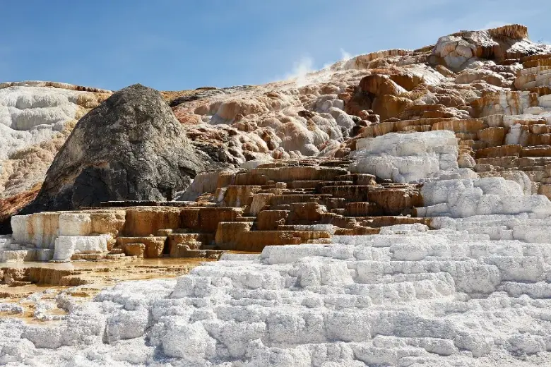
TravertineMammoth Hot Springs Banded iron formationMichigan
Banded iron formationMichigan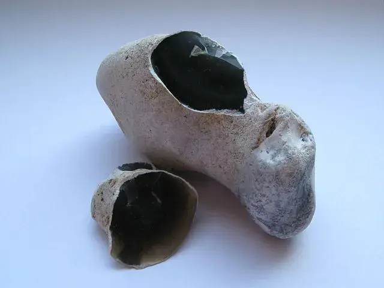
Flinta chert with a weathered crust Ooliteooids cemented into rock
Ooliteooids cemented into rock
Biochemical rocks
Organisms extract dissolved minerals, mainly aragonite, to build shells and other hard parts. When they die, the hard parts settle, are buried, compacted, and cemented. This is the main way forms, the most common non-clastic sedimentary rock. Limestone is mostly calcite (CaCO3), sometimes with its close relative dolomite. Calcite fizzes (effervesces) in hydrochloric acid; dolomite fizzes only when powdered, for example by scratching (Unit 3).
- Fossiliferous limestone has many visible fossils; whole coral reefs can be preserved in detail.
- is lithified beach sand made mostly of loosely cemented shells and fragments, like modern beaches in the Bahamas.
- is rich in the shells of a microorganism, the coccolithophore.
- (microscopic calcite mud) is very fine limestone with microfossils visible only under a microscope.
- Biogenic chert forms on the deep ocean floor from , sediment of microscopic shells. Ooze is calcareous (calcium carbonate) or siliceous (silica, from radiolarians and diatoms) depending on the shells.
Organic rocks
Organic material can be preserved in sedimentary strata by the same processes, burial, compaction, and diagenesis, even though it is not sediment. Lush swamps can make ; shallow marine sediment rich in organic material can become petroleum and natural gas deposits (Chapter 16).
 Fossiliferous limestonebrachiopods and bryozoans, Kope Formation, Ohio
Fossiliferous limestonebrachiopods and bryozoans, Kope Formation, Ohio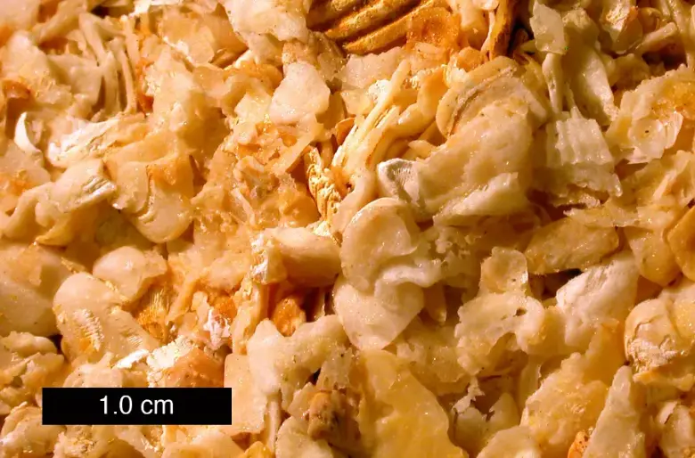
Coquinacemented shells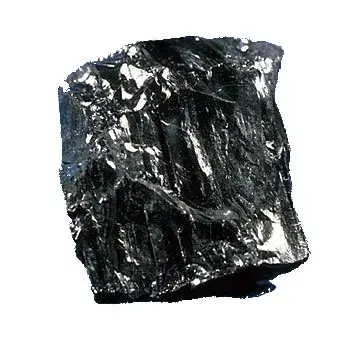
Anthracite coalthe highest grade of coal Rock gypsumCastile Formation, New Mexico
Rock gypsumCastile Formation, New Mexico
Classifying chemical rocks
Unlike detrital rocks, chemical, biochemical, and organic rocks are classified by mineral composition. Most are (one mineral), so the rock is named for its mineral (Table 5.4). Limestone is the exception, with two competing schemes: the Folk classification, based on grains and usually needing a petrographic microscope, and the Dunham classification, based on texture visible by eye or hand lens. Most carbonate geologists use Dunham.
| Main component | Rock | Origin |
|---|---|---|
| Calcite (CaCO3) | Limestone: fossiliferous, coquina, chalk, micrite, oolite, tufa, travertine | Biochemical (most) or inorganic (oolite, tufa, travertine) |
| Dolomite (CaMg(CO3)2) | Dolostone | Diagenesis of limestone |
| Halite (NaCl) | Rock salt | Evaporite |
| Gypsum | Rock gypsum | Evaporite |
| Silica (SiO2) | Chert (flint, jasper…), geyserite | Inorganic or biochemical (siliceous ooze) |
| Iron oxides + chert | Banded iron formation | Inorganic, early Earth |
| Plant remains | Coal | Organic |
"Dolostone" is the usual rock name for dolomite rock; the chapter uses "dolomite" for both.
Check yourself: Section 5.3 quiz in the textbook ↗
5.4Sedimentary structures
are visible textures or arrangements of sediment in a rock. Using uniformitarianism, geologists compare them with structures forming in modern environments to work out how and where ancient rocks formed.
5.4.1 Bedding planes
separate the layers (strata) in sedimentary and some volcanic rocks. Each marks a change in deposition conditions, which may be subtle, such as underlying sediment firming up. Each layer is a or , the basic unit of , the study of sedimentary layering. A bed is thicker than 1 cm and is the smallest mappable unit; a layer thinner than 1 cm is a . are laminae and beds deposited in repeating cycles; they record climate history, especially in lakes and glacial deposits.
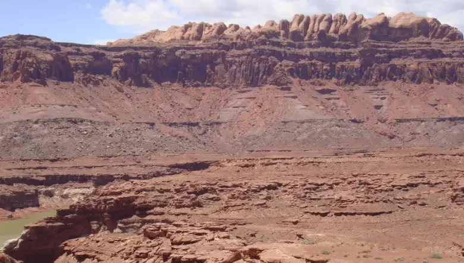
5.4.2 Graded bedding
is a layer that grows steadily finer (or coarser) upward, usually deposited as energy decreases. A is the graded bedding of a (Figure 5.24). It forms from offshore sediment gravity flows: an energetic event stirs up sediment into a dense slurry, which flows down submarine channels and canyons because it is denser than seawater. As it reaches deeper basins it slows and drops coarse grains first, then finer ones.

5.4.3 Flow regime and bedforms
In moving water or wind, sand is the most easily moved and deposited grain. Silt and clay grains attract each other and stick to the bed, so at higher flow they stay put while sand moves. are structures made by fluid flow over sand. Their shape depends on grain size, velocity, and , which is divided into lower and upper regimes, each split further (Table 5.5, Figure 5.26).
| Flow regime (part) | Bedform | Description |
|---|---|---|
| Lower (lowest) | Plane bed | Lower plane bed, flat laminations |
| Lower (lower) | Ripples | Small inclined layers dipping downflow |
| Lower (upper) | Dunes | Larger inclined cross-beds, ± ripples, dipping downflow |
| Upper (lower) | Plane bed | Flat layers; can show parting lineations |
| Upper (upper) | Antidunes | Hard-to-preserve reverse dunes dipping gently upflow |
| Upper (uppermost) | Chutes and pools (rare) | Erosional; not really a bedform; rarely preserved |
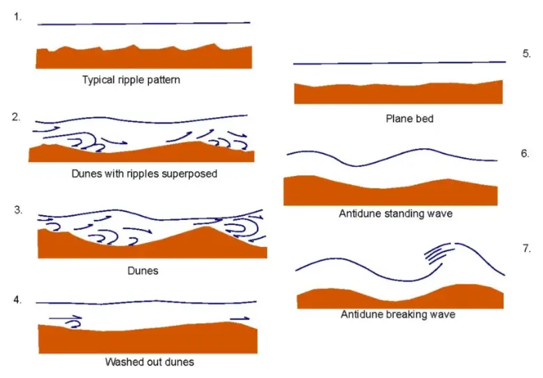
Plane beds
Lower-regime plane beds are flat, parallel layers like small-scale bedding, and can form even in still water such as lakes. Upper-regime plane beds form in fast flow and may look the same, but typically show : slight alignments of grains in rows, caused by the high transport rates of upper flow regimes.
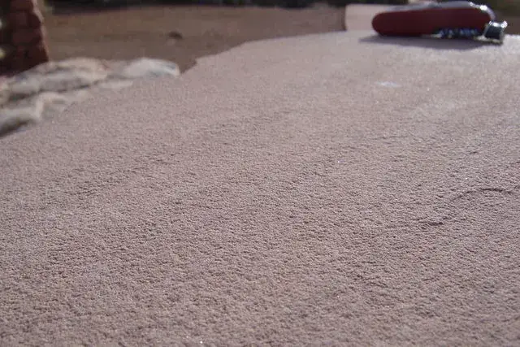
Ripples
(ripple marks, ripple cross-beds, or ripple cross-laminations) are ridges that build as grains pile up on a plane bed, usually centimetres in scale, though glacial-lake outburst floods have made ripples up to 20 m tall. First described scientifically by Hertha Ayrton, they can be straight-crested, sinuous, or complex (Figure 5.28). Asymmetric ripples form in one-way flow; symmetric ripples form in back-and-forth flow typical of intertidal swash zones. form under high sedimentation rates and appear as overlapping ripple shapes.
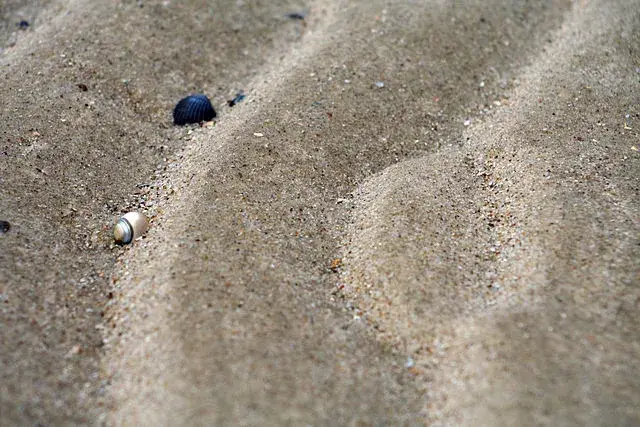
Current rippleflow from right to left; steep side faces downcurrent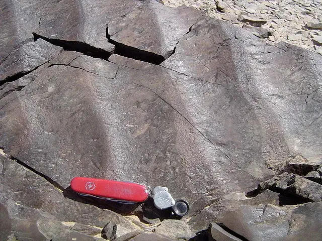
Wave ripplesymmetric, Nomgon, Mongolia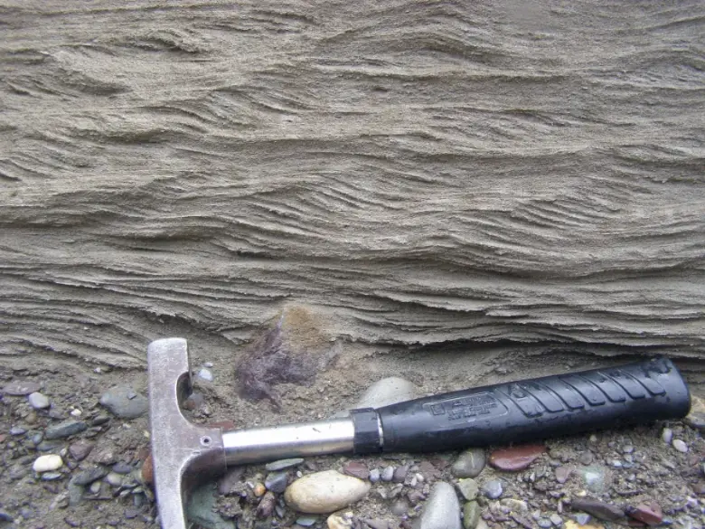
Climbing ripplesIndia
Dunes
are large ripples and typical examples of large , which forms when ripples or dunes pile on each other, interrupting or cutting into the layers below. They are the most common structure in channelized flows of air or water. Desert dunes are much taller than river dunes because the atmosphere is far deeper than a river; examples include the Sahara, Death Valley, and the Gobi.
Grains build up on the side, which is gentler than the side, where grains fall down (Figure 5.30). The difference in slope shows in cross-section and records past flow direction. Trough cross-beds (curved surfaces) are more common than planar cross-beds (flat surfaces). Strong tidal flows in and out build dunes in opposite directions, giving . Hurricane-strength storms stirring normally calm seafloor make , a 3D pattern of hills and hollows.
 Cross-bedded sandstonelithified dunes, Zion National Park, Utah
Cross-bedded sandstonelithified dunes, Zion National Park, Utah Modern duneMorocco
Modern duneMorocco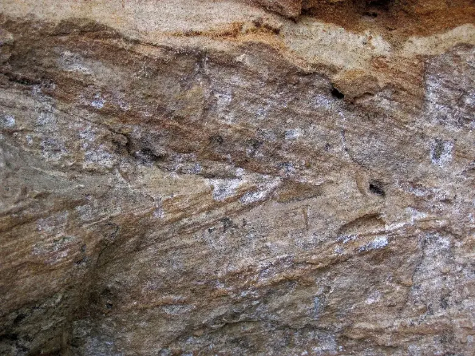
Herringbone cross-beddingMazomanie Formation, Minnesota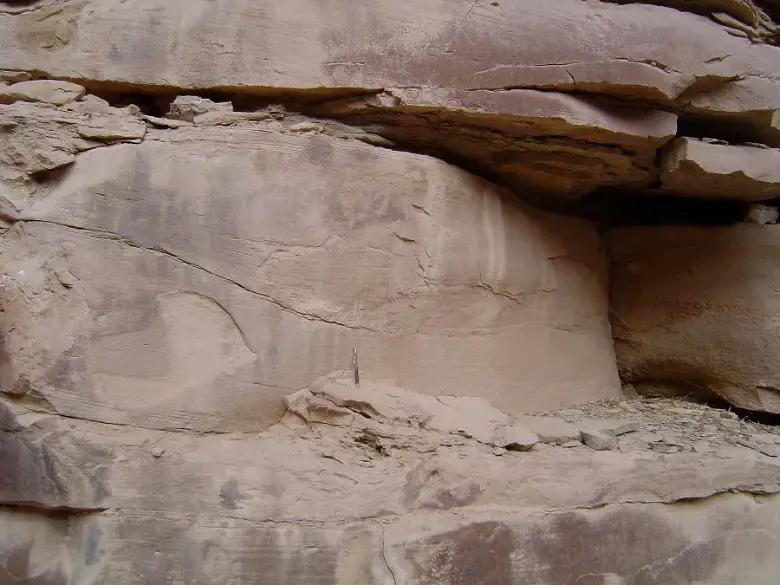
Hummocky cross-stratificationwavy layers
Antidunes
look like dunes but form in fast, upper-regime flow, where sediment piles up upstream of a subtle dip instead of moving downstream. They form in phase with the flow (marked by rapids in rivers) and are rarely preserved, because such fast flow also erodes.

5.4.4 Other structures
- : organisms burrowing through soft sediment disrupt its layers; the backfilled tunnels are preserved. It is most common in shallow marine settings and can indicate water depth.
- : clay-rich sediment swells underwater, then shrinks as it dries, forming polygonal cracks that taper downward. New sediment fills the cracks. They form only where sediment is underwater then exposed, such as tidal flats, and supply mud chips found in sandstone and conglomerate. Rarer look similar but form when clay shrinks underwater.
- : features at the base (sole) of a bed, on top of the bed below; they show flow direction or which way is up. fill scours that are steep upstream and shallow downstream. are straighter grooves cut by large clasts dragged along the bed. Tool marks are made by objects such as sticks. , a kind of soft-sediment deformation, form where coarse sediment sinks into softer, finer sediment below.
- : small pits in soft sediment, generally from rain but possibly from escaping gas bubbles.
- : large, flat clasts stacked like tilted shingles, dipping and facing into the flow, or lying flat with long axes parallel to it. Used to read , especially in alluvial deposits.
 Bioturbationdolomitic siltstone, Kentucky
Bioturbationdolomitic siltstone, Kentucky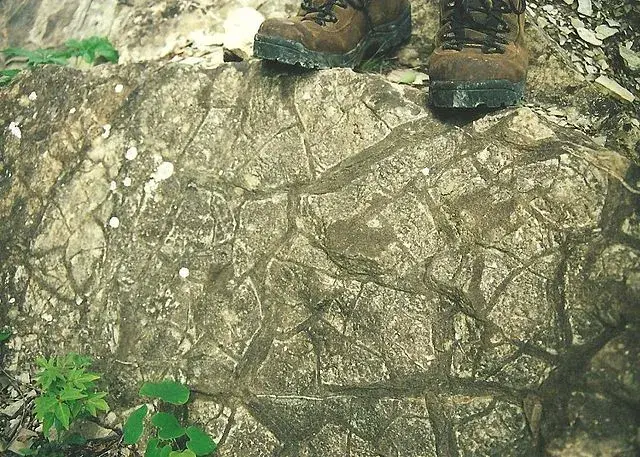
Mudcrackslithified, Maryland Flute castflow toward the upper right
Flute castflow toward the upper right Groove castsbase of a turbidite, Italy
Groove castsbase of a turbidite, Italy Load castlight sand sunk into dark mud
Load castlight sand sunk into dark mud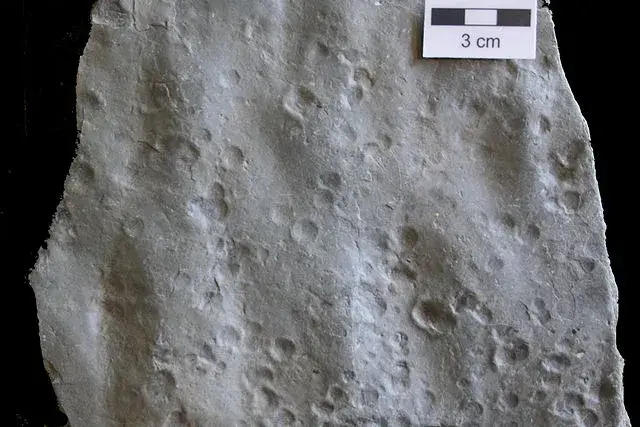
Raindrop impressionsover wave ripples, Nova Scotia
5.4.5 Geopetal structures
(up-direction indicators) show which way was up when the layers formed, which matters where rocks are tilted, deformed, or overturned. Well-preserved mudcracks, sole marks, and raindrop impressions work, as do:
- : small voids that fill during diagenesis. A void filled partly, or in stages, records a "level bubble" frozen in time.
- Cross-bedding: where one cross-bed set cuts another below it, the cross-cutting shows up direction.
- Ripples and dunes: when well preserved, crests (tops) can be told from troughs (bottoms).
- Fossils: body fossils in life position, trace fossils such as footprints, and intact fossil reefs show up direction; index fossils such as ammonites date strata and give up direction from relative ages.
- Vesicles: gas escapes upward through lava flows, so vesicles increase toward the top of a flow.
 Imbricationflow from left to right
Imbricationflow from left to right Geopetalthe sediment–calcite line was horizontal
Geopetalthe sediment–calcite line was horizontal Trace fossilEubrontes footprint, Utah; up is out of the page
Trace fossilEubrontes footprint, Utah; up is out of the page
Check yourself: Section 5.4 quiz in the textbook ↗
5.5Depositional environments
A main goal of stratigraphy is to work out the original , such as a mountain glacier, gentle floodplain, dry desert, or deep seafloor (Figure 5.35). Table 5.6 gives a simplified guide to what to look for in the rock record.

| Environment | Sediment | Common rocks | Typical fossils | Structures |
|---|---|---|---|---|
| Abyssal | Very fine muds and oozes, diatomaceous earth | Chert | Diatoms | Few |
| Submarine fan | Graded Bouma sequences, alternating sand/mud | Clastic rocks | Rare | Channels, fan shape |
| Continental slope | Mud, possible sand, contourites | Shale, siltstone, limestone | Rare | Swaths |
| Lower shoreface | Laminated sand | Sandstone | Bioturbation | Hummocky cross-beds |
| Upper shoreface | Planar sand | Sandstone | Bioturbation | Plane beds, cross-beds |
| Littoral (beach) | Very well sorted sand | Sandstone | Bioturbation | Few |
| Tidal flat | Mud and sand with channels | Shale, mudstone, siltstone | Bioturbation | Mudcracks, symmetric ripples |
| Reef | Lime mud with coral | Limestone | Many, commonly coral | Few |
| Lagoon | Laminated mud | Shale | Many; bioturbation | Laminations |
| Delta | Channelized sand with mud, ± swamp | Clastic rocks | Many to few | Cross-beds |
| Fluvial (river) | Sand and mud, can have larger sediment | Sandstone, conglomerate | Bone beds (rare) | Cross-beds, channels, asymmetric ripples |
| Alluvial | Mud to boulders, poorly sorted | Clastic rocks | Rare | Channels, mudcracks |
| Lacustrine (lake) | Fine-grained laminations | Shale | Invertebrates; rare (deep) bone beds | Laminations |
| Paludal (swamp) | Plant material | Coal | Plant debris | Rare |
| Aeolian (dunes) | Very well sorted sand and silt | Sandstone | Rare | Large cross-beds |
| Glacial | Mud to boulders, poorly sorted | Conglomerate (tillite) | None listed | Striations, dropstones |
5.5.1 Marine
Marine environments are always under seawater. Their deposits depend mostly on water depth, with two exceptions: submarine fans and turbidites.
Abyssal
Abyssal rocks form on the , relatively flat ocean floor with small mounts called abyssal hills (100 m to 20 km across, possibly made by extension). With little water movement, the sediment is very fine and comes in three kinds:
- Calcareous ooze: calcite plankton shells, for example chalk.
- Siliceous ooze: plankton shells of silica or hydrated silica. Below the calcite dissolves, so only silica shells remain, as in ; chert also forms from this sediment. Both oozes are biochemical.
- : very fine, typically brown or red clay that sinks very slowly in remote open ocean with little plankton.

and turbidites bring coarser sediment to the deep floor. When sea level is low, strong river currents carve submarine canyons into the continental shelf. When sea level rises, sediment builds up on the shelf, often as deltas. Periodically it is disturbed into dense slurries that rush down the canyons as turbidity currents, depositing turbidites as the slope eases; a network of them builds a fan, much like alluvial fans and deltas on land (Figure 5.37).
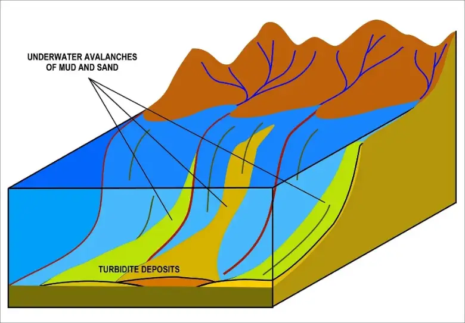
Continental slope
Slope deposits are uncommon in the rock record. The most notable are : deep ocean currents running along the slope between the shelf and deep floor build smooth sediment drifts, sometimes interwoven with turbidites.
Lower and upper shoreface
The lower shoreface lies below normal , the depth to which waves stir the water (about half the wavelength), so its sediment is not winnowed daily (Figure 5.38). Its layers are finely laminated and may show hummocky cross-stratification from large storm waves. The upper shoreface lies within normal wave action but below the beach. It has very well sorted fine sand in planar beds (lower part of the upper flow regime), and cross-beds made by longshore currents.

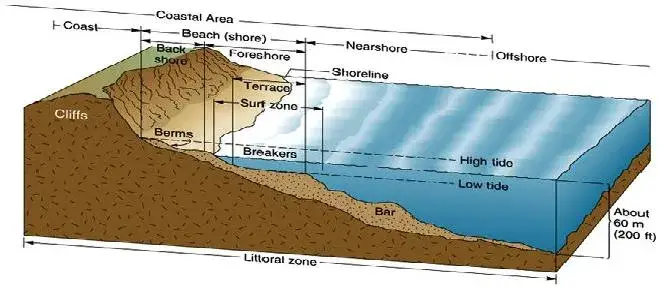
5.5.2 Transitional (coastline) environments
Shoreline or coastline environments are complex zones where ocean water meets land. Preservation potential is very high, because deposition often happens on the continental shelf and underwater, and they are important sources of petroleum and natural gas. Their study, , looks at how deposits change as sea level rises and falls with tides, climate, and plate tectonics. A steady rise in sea level relative to the shoreline is a ; a relative fall is a (Figure 5.40). See also Chapter 12.
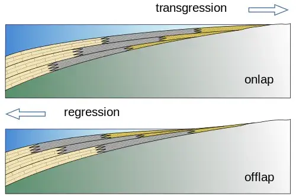
- Littoral (beach): the has highly weathered, well-sorted sand, mostly quartz; black and other sands are exceptions. The (zircon, tourmaline, rutile) measures how weathered the sand is: these rare, resistant minerals concentrate in older beaches, sometimes enough to mine. Constant surf leaves beaches without sedimentary structures; beaches with high sediment supply may have dunes nearby.
- Tidal flats: (mud flats) are flooded and drained by tides. Mostly fine sediment with some sand, multidirectional ripples, and mudcracks from exposure at low tide; ripples plus mudcracks together are distinctive of tidal flats. Tidal inlets and channels concentrate flow, so they have coarser grains and larger ripples, sometimes dunes.
- Reefs: geologically, a is any raised feature on the continental shelf, seaward of and separate from the beach; it need not be made by organisms, and the word is also used on land (the Waterpocket Fold of Capitol Reef, Utah). Most reefs are biological. Coral reefs grow as soft-bodied organisms add hard material, and on sinking land they can grow around sediment and preserve it. Their sediment is fine and mostly carbonate. Muddy water stops reef growth because corals need sunlight for their symbiotic algae, . Reefs break waves and storms, letting fine grains settle in lagoons behind them.
- Seamounts, atolls, guyots: per the chapter, a is the base of an ocean island left underwater after waves erode the top (e.g. the Emperor Seamounts over the Hawaiian hotspot). Reefs grow on the flat tops: if the reef builds above sea level and rings the top, it is an ; if the seamount and reef are submerged by erosion, subsidence, or sea-level rise, it is a .
- Lagoons: a is a small body of seawater inland from the shore or cut off by a reef or barrier island. Sheltered from tides, currents, and waves, it collects very fine sediment. Lagoons and estuaries are highly productive, so their rocks often show bioturbation or coal. Where evaporation beats inflow, salt flats called and dune fields form at or above high tide.
- Deltas: a forms where a river enters a lake or ocean, its slope drops to zero, and the flow slows, dropping coarse clasts, then sand and mud. As one part fills, flow shifts back and forth into a spreading network of . The name comes from the Greek letter Δ, the shape of the Nile delta. Deltas are classed by their dominant process (Figure 5.42).
 Coral reefFlynn Reef, Australia
Coral reefFlynn Reef, Australia Fringing reefVanatinai; as the island erodes, only the reef will remain
Fringing reefVanatinai; as the island erodes, only the reef will remain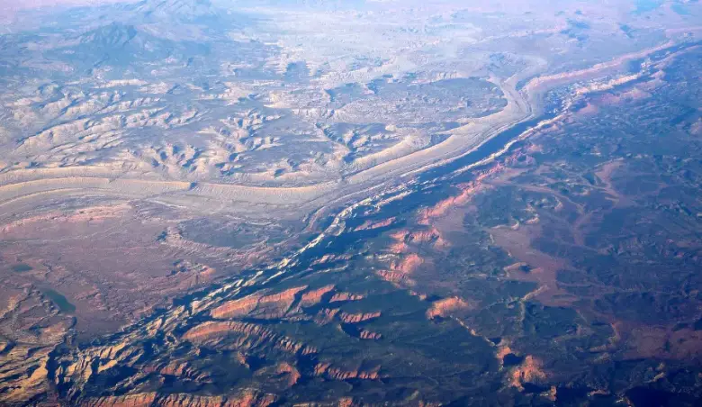
A reef on landWaterpocket Fold, Capitol Reef, Utah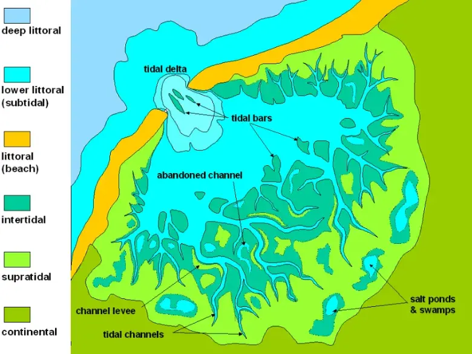
Tidal flatzones and channels Beach sandlithified heavy-mineral layers (dark), India
Beach sandlithified heavy-mineral layers (dark), India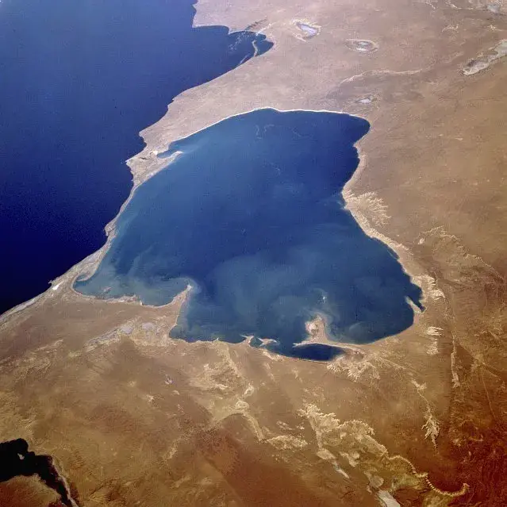
LagoonKara-Bogaz Gol, Turkmenistan
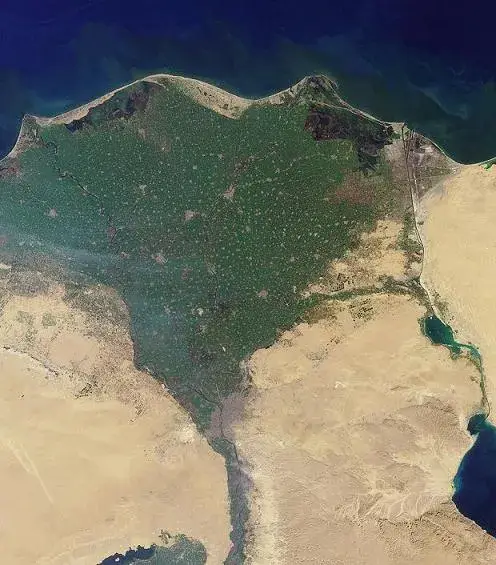
Wave-dominatedNile, Egypt: smooth coast, beach ridges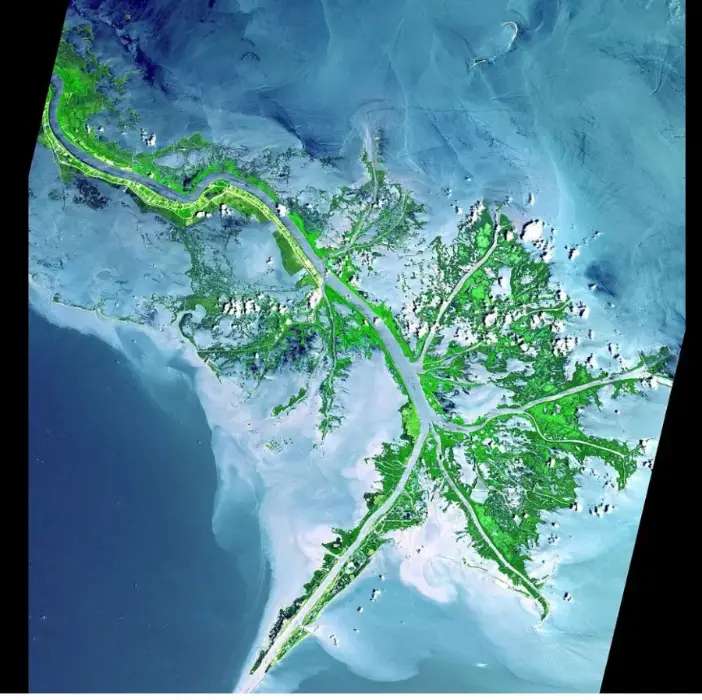
River-dominatedMississippi: levees make a "birdfoot"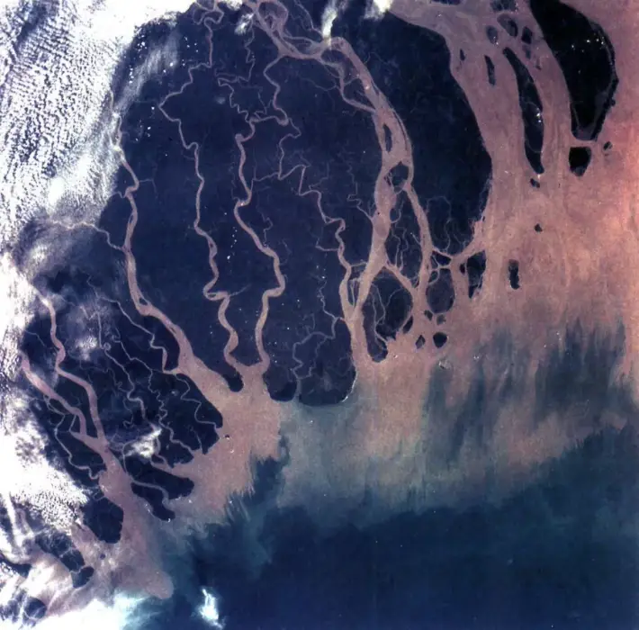
Tide-dominatedGanges: channels between sand bars and ridges
5.5.3 Terrestrial
Land environments are diverse, and water, liquid, frozen, or scarce, is a major factor in all of them.
- Fluvial: (river) systems are , with one channel wandering across a floodplain whose fine sediment is laid down only in floods, or , with coarser sediment in many intertwined channels around gravel and sand bars (Chapter 11).
- Alluvial: systems have intermittent water flow and are common in arid places with little soil. The most distinctive deposit is the , a large cone of sediment where streams leave dry mountain valleys. Sediments are poorly sorted and coarse, often near playa lakes or aeolian deposits; lithified alluvial beds fill the basins of the Basin and Range.
- Lacustrine: (lake) deposits form like marine ones on a smaller scale and are very fine and thinly laminated. Lakes form in tectonic basins (Lake Baikal), volcanic calderas (Crater Lake), glacial landscapes (the Great Lakes), wetter past climates (pluvial Lake Bonneville), and river floodplains (oxbow lakes). When lakes dry up, form, with more evaporite minerals.
- Paludal: systems (bogs, marshes, swamps) hold much organic matter, often in coastal, humid, low-lying, warm areas. A peat bog can become coal when lithified.
- Aeolian: (eolian) deposits are wind-blown. Wind carries less than water, so grains range from dust to sand; silt and clay can cross whole oceans. With enough sediment, large dunes form (Figure 5.43). Ralph A. Bagnold (1896–1990) considered only barchan and linear seif dunes true dunes; others also recognize transverse, star, parabolic, and linear dunes, and parabolic and linear dunes anchored by plants are common on coasts. Compacted wind-blown silt is , often glacial rock flour; it covers thousands of square miles of the U.S. Midwest, and China's Loess Plateau came from the Gobi Desert.
- Glacial: the most poorly sorted deposits in nature. The main type is , an unsorted mix of large and small fragments; glacial combines fine rock flour with huge boulders. Larger clasts often show from abrasion under moving ice. Glaciers also create fluvial, deltaic, lacustrine, alluvial, and aeolian environments (Chapter 14).
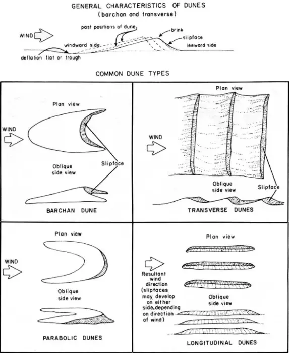
 MeanderingCauto River, Cuba
MeanderingCauto River, Cuba BraidedWaimakariri River, New Zealand
BraidedWaimakariri River, New Zealand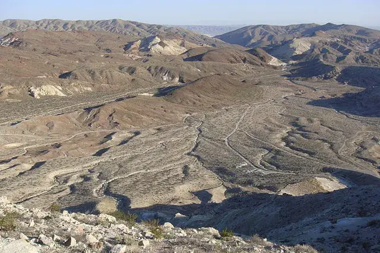
Alluvial fanRed Rock Canyon, California LoessLoess Plateau, China
LoessLoess Plateau, China Glacialnear Athabasca Glacier, Canada
Glacialnear Athabasca Glacier, Canada Diatomaceous earthMonterey Formation, California
Diatomaceous earthMonterey Formation, California
5.5.4 Facies
Geologists also group sedimentary rock by its depositional characteristics, called or : physical, chemical, and biological properties, including how they change across beds of the same layer or age. Many environments work side by side at the same time, so rocks of one age can record several. In the Grand Canyon, strata of one age include beach sand, tidal-flat silt, offshore mud, and limestone farther offshore.
Facies also change over time in one place. During a marine transgression the shoreline moves inland and offshore environments cover former land, so beach facies end up buried by offshore facies (Figure 5.45). In the Middle Cambrian, the sea transgressed across the Grand Canyon region, leaving the beach facies Tapeats Sandstone, the near-offshore mud facies Bright Angel Shale, and the far-offshore Muav Limestone.
Biological facies are remains (coal, diatomaceous earth) or evidence (fossils) of organisms. , specific to an environment or time period, are an example. Because transgression, deposition, and burial take a long time, fossil assemblages record evolution: in the Grand Canyon, the biological facies show older life forms in the west and younger ones in the east.
Check yourself: Section 5.5 quiz in the textbook ↗
Summary
Sedimentary rocks fall into two main groups: clastic (detrital) and chemical. Mechanical and chemical weathering break bedrock into sediment, and erosion carries it away. Sediment that is deposited, buried, compacted, and cemented becomes clastic rock, classified by grain size; sandstone, for example, is made of sand-sized grains. Chemical sedimentary rocks precipitate from water and are classified by composition; limestone is calcium carbonate. Sedimentary structures record how sediment was deposited, and depositional environments, from deep sea to desert, are read from structures, sediments, and fossils to reconstruct a region's ancient geography.
Quick recap
- Water: polar, cohesive, densest at 4 °C, liquid 0–100 °C, universal solvent.
- Mechanical weathering: pressure expansion (exfoliation), frost wedging, root wedging, salt expansion (tafoni). Smaller pieces mean more surface for chemical weathering.
- Chemical weathering: hydrolysis (feldspar → clay), dissolution (karst), oxidation (hematite, goethite, limonite). Goldich: olivine weathers first, quartz last.
- Soil horizons O, A, (E), B, C, R. Soil depends on parent material, topography, weathering, climate, and organisms.
- Lithification: deposition → compaction → cementation, all within diagenesis.
- Clastic by grain size: conglomerate/breccia > 2 mm; sandstone 1/16–2 mm; siltstone, claystone, mudstone, shale finer. Sorting and rounding record transport.
- Chemical by composition: evaporites (calcite → gypsum → halite → K-Mg salts), tufa, travertine, chert, BIF, oolite; limestone (biochemical); coal (organic).
- Structures: bedding, graded bedding (Bouma), ripples, dunes and cross-beds, antidunes, mudcracks, sole marks, imbrication, geopetal indicators.
- Environments: marine, transitional, terrestrial. Facies shift landward in a transgression, so beach sand ends up under offshore mud.
Check yourself: Chapter 5 review quiz in the textbook ↗
Resources
Fact-check notes
Every statement in this guide was checked against the textbook chapter. Where the chapter differs from current references or contradicts itself, the guide uses the corrected value and lists the difference here, so you know what the textbook says.
| Topic | Chapter says | Note |
|---|---|---|
| Surface-area-to-volume ratios | 96/64 = 0.75 (3:2); 192/64 = 1.5 (3:1); 384/64 = 6 | Arithmetic slips: 96/64 = 1.5 (3:2) and 192/64 = 3 (3:1). The ratios in parentheses and the last value are right. Figure 5.5 uses the corrected values. |
| Hydrolysis products | Feldspar + carbonic acid gives "water-soluble clay" | Clay minerals are the solid residue; the cations, bicarbonate, and silica are what dissolve. The chapter's own reaction and following paragraph say so. |
| CO2 in air | "The fifth-most abundant gas" | In dry air it ranks fourth, after nitrogen, oxygen, and argon (UCAR); it is fifth only if variable water vapor is counted. The guide omits the ranking. |
| Rain pH | "Natural rainwater can be highly acidic, with pH levels as low as 2" | Normal rain is about pH 5.6; acid rain, caused mainly by pollution, is usually pH 4.2–4.4 (U.S. EPA). The guide leaves out the pH 2 claim. |
| Mudstone grain size | "Grains smaller than sand (less than 2 mm)" | Grains smaller than sand are less than 1/16 mm (0.0625 mm); 2 mm is the sand–gravel boundary (USGS). |
| Wentworth scale | Pebble sizes 2.52 to 0.08 inches are "very coarse to very fine granules"; "grains smaller than sand are called silt" | Those inch values (64 to 2 mm) are the boundaries of the pebble and granule classes, not granule sizes. Below silt is clay (< 0.004 mm). Table 5.2 follows Wentworth (1922) and the USGS. |
| Soil horizons | Upper B horizon is "regolith"; lower B is "saprolite" | In most references, regolith is all the loose material above bedrock (soil included), and saprolite is rock weathered in place that keeps its original structure, usually below the B horizon. The guide gives the chapter's usage but flags it. |
| Soil order names | "Xoxisols", "xosisols", "Ardisol" | Oxisols and Aridisols (USDA NRCS). |
| Nitrogen fixers | "Special bacteria found only in soil" | Nitrogen-fixing microbes also live in water, for example ocean cyanobacteria. For this chapter, the point is that soil bacteria supply most usable nitrogen on land. |
| Dolomite formula | "CaMgCO3" (Biochemical section) | CaMg(CO3)2, as the chapter writes it in 5.3.1. |
| Varves | Cycles "typically daily or seasonally" | In standard usage a varve is one year's deposit: a coarser summer layer and a finer winter layer. The guide says "repeating cycles". |
| Bouma sequence | Divisions A–D | Bouma's (1962) full sequence has a fifth division, E, of fine pelagic mud on top. The figure shows the chapter's A–D. |
| Sole marks | "Typically found in river deposits" | Flute and groove casts are best known from the bases of turbidite beds, as the chapter's own groove-cast photo shows. The guide does not repeat "river deposits". |
| Seamount | "The base of an ocean island left standing underwater after the upper part is eroded" | Generally, a seamount is any undersea mountain; a flat-topped, eroded one is a guyot. The guide reports the chapter's definition and marks it as such. |
| Diamictite | "Literally means two sizes" | The term comes from a word meaning "thoroughly mixed"; it describes the unsorted mix of sizes. The guide gives the meaning without the etymology. |
| Typos | "Agnold"; "Minevre"; "Bright Angle Shale"; "Castle formation"; "Athabaska"; "Hawiian" | Corrected to Bagnold, Minerve, Bright Angel Shale, Castile Formation, Athabasca, Hawaiian. |
Diagrams were checked against the chapter and standard references: the water bond angle (about 104.5°, which the chapter rounds to 105°), the Goldich order (Goldich, 1938, which mirrors Bowen's series), evaporite percentages (chapter table), ripple and dune geometry (gentle stoss or windward side, steep lee side, foresets dipping downstream), and the transgressive Tapeats–Bright Angel–Muav facies, which get younger eastward.
Credits
Content summarized from An Introduction to Geology, Chapter 5, © 2017 Chris Johnson, Matthew D. Affolter, Paul Inkenbrandt, and Cam Mosher, licensed CC BY-NC-SA 4.0. Images are the chapter's own, used under the licenses stated in its media attributions and credited in each caption.
- CC BY / CC BY-SA: as credited in each figure caption.
- Public domain: U.S. government works (USGS, NASA, NOAA, National Park Service, Federal Highway Administration, U.S. Navy) and others as marked.
- Water molecule, surface-area cubes, hydrolysis, Goldich series, soil profile, lithification, evaporite sequence, Bouma sequence, ripples, dune, and transgression facies: drawn for this guide from the chapter text and figures.
- Outside references for checking: Wentworth (1922) and the USGS grain-size table; Goldich (1938); U.S. EPA on rain pH; USDA NRCS soil orders.